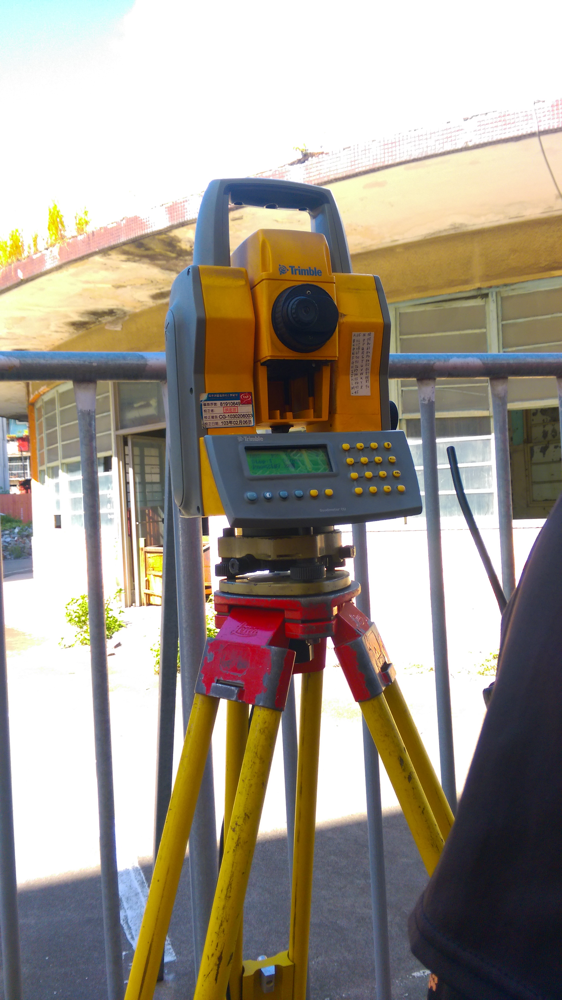

今天的主要工作也是接聽電話，大部分的時間都是自己看線上課程。下午跟著兩個叔叔一起出外業測量!!是用經緯儀測量建物的經界線，雖然大二有學過測量學，但經過一年沒碰也忘的差不多了XD叔叔有教我定心定平，以及儀器的操作，仍然有一些操作跟上課學的不太一樣，實務的操作比上課所學複雜許多，而且還有很多代碼需要記，沒有想像中的容易。期間叔叔有給我操作儀器，常常看了半天還找不到稜鏡在哪，就會聽到無線電傳來:我手很酸欸XD真的是超級不好意思，也很感謝他們的包容與耐心的教導!

趁著空檔我也跟叔叔小聊了一下，才知道原來他是非本科系的，他說他是從什麼都不會，進來才慢慢學會的，但測量這個工作雖然可以到處跑，每天的工作環境變化大，一開始會覺得很新鮮，做久了卻很累，常常還沒心理準備好，就要換到一個新的地方工作。這也讓我思考，這對我來說可能不是很理想的工作，一方面要頂著大太陽作業，上山下海，還要能適應多變的環境，不管是體能還是心理都要兼顧才有辦法堅持下去。